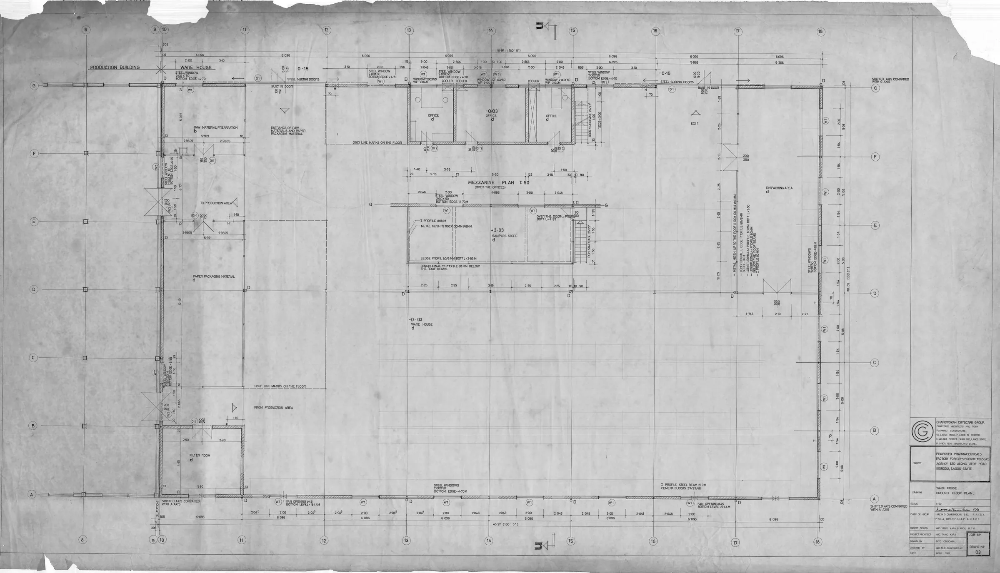

Learn how to effectively source Laennec for clinics. This guide covers essential considerations for professional buyers when ordering from wholesale suppliers.
Ordering Laennec from a wholesale supplier can be a daunting task for clinics, spas, and wellness centers. With numerous suppliers available, each offering different products, prices, and terms, it’s crucial to navigate this landscape carefully. The stakes are high—poor sourcing decisions can lead to issues such as regulatory non-compliance, inventory shortages, or even client dissatisfaction. This guide aims to equip you with the knowledge needed to make informed purchasing decisions.
Understanding what to check before placing your order is essential for ensuring that you receive high-quality Laennec that meets your clinic's needs. This guide will walk you through the key considerations, helping you to streamline your procurement process and enhance your service offerings.
Key Takeaways
- Identify the specific needs of your clinic to effectively source Laennec.
- Evaluate wholesale suppliers based on product quality, reliability, and compliance.
- Ensure proper documentation accompanies your order to meet local regulations.
- Plan for minimum order quantities (MOQ) and establish a reorder strategy.
- Maintain clear communication with suppliers to facilitate smooth logistics and timely deliveries.
What this guide covers
- Understanding Laennec
- Buyer scenarios and needs
- Comparison criteria for suppliers
- Checklist before requesting a quote
- Logistics and documentation
- MOQ and reorder planning
- Frequently asked questions
What buyers should understand first

Laennec is a product commonly sought after by clinics, spas, and wellness centers due to its potential benefits in various wellness applications. As a professional buyer, it’s essential to grasp the nature of Laennec and how it fits within your offerings. This product is typically used in aesthetic and wellness treatments, making it a valuable addition to your inventory.
When considering Laennec for clinics, focus on aspects such as quality assurance, compliance with local regulations, and the reliability of your supplier. A well-sourced product can enhance your service offerings and client satisfaction, while poor sourcing can lead to complications, including regulatory issues and customer dissatisfaction. This guide provides insights to help you make informed decisions when ordering Laennec.
Which buyers is this most relevant for?
This guide is particularly relevant for professional buyers in clinics, spas, and wellness centers responsible for sourcing products like Laennec. Understanding your specific needs is crucial when planning orders. For instance, clinics may require a consistent supply for patient treatments, while spas might focus on seasonal promotions or special packages. Resellers and distributors must also consider inventory turnover and demand forecasting to evaluate their sourcing strategies effectively.
Different business types will have unique order planning needs. A high-volume clinic may prioritize bulk purchasing and reliable delivery schedules, while a smaller spa might focus on flexibility and lower minimum order quantities (MOQ). Each scenario requires careful evaluation of suppliers and their offerings to ensure that they align with your operational needs.
How to compare options before ordering
When comparing options for ordering Laennec, consider the following practical criteria:
- Product Type: Ensure that the Laennec product you are considering meets your clinic's standards and intended use.
- Brand Reputation: Research the brands available and their reputation in the market. Quality assurance is key.
- Packaging: Check the packaging details to ensure it meets your clinic's needs and maintains product integrity during transport.
- Batch and Expiry Visibility: Ensure that suppliers provide clear information on batch numbers and expiry dates to manage inventory effectively.
- Supplier Communication: Evaluate how responsive and transparent suppliers are during the inquiry process. Good communication can prevent issues down the line.
- Destination Requirements: Consider any specific requirements for shipping to your location, including customs regulations and handling procedures.
Buyer checklist before requesting a quote


- Define your specific needs for Laennec, including product type and quantity.
- Research potential wholesale suppliers and their reputation in the market.
- Prepare a list of questions regarding product quality, documentation, and compliance.
- Check the supplier’s MOQ and evaluate if it aligns with your purchasing strategy.
- Clarify shipping and packing requirements to avoid delays.
- Ensure you have a plan for reorder timing based on your sales forecasts.
- Review payment terms and conditions to ensure they meet your financial planning.
Shipping, packing and documentation questions
Logistics play a critical role in the procurement process. When ordering Laennec, consider the following questions:
- What are the shipping options available, and how do they affect delivery times?
- What packing methods does the supplier use to ensure product safety during transit?
- What documentation will be provided with the shipment, such as invoices and compliance certificates?
- Are there any specific customs requirements for importing Laennec into your country?
- How does the supplier handle issues related to lost or damaged shipments?
- What are the insurance options for your shipment during transit?
MOQ, quotation and reorder planning
Preparing for your order involves understanding the minimum order quantities (MOQ) and how they fit into your business model. When requesting a quote, be clear about the quantities you need and any variants you may require. Additionally, consider your destination details, as these can affect shipping costs and timelines.
Effective reorder planning is essential to maintain inventory levels. Monitor your sales closely and establish a reorder point that aligns with your clinic's needs. SOLA can assist you in confirming current availability and providing a wholesale quotation tailored to your requirements. Establishing a good relationship with your supplier can also facilitate smoother reordering processes in the future.
FAQ
What is Laennec?
Laennec is a product used in wellness applications, often sought by clinics and spas for its potential benefits.
How do I choose a reliable wholesale supplier?
Research supplier reputations, check for product quality, and ensure clear communication before making a decision.
What should I include in my quote request?
Include product details, quantities, shipping requirements, and any specific questions about compliance and documentation.
What are the typical MOQs for Laennec?
MOQs can vary by supplier, so it’s essential to confirm this during your inquiry.
How can I ensure timely delivery?
Communicate clearly with your supplier about your shipping needs and monitor your order status closely.
Contact SOLA for wholesale quotation via WhatsApp.
Planning a wholesale request?
Send product names, quantities and destination for a tailored discussion.
Contact SOLA on WhatsApp →General educational content for professional buyers. Not medical, legal, regulatory or import advice.
Image sources: Ijede Rd Ikorodu Pharmaceuticals Factory For Crsterlight Overseas Agency Ltd Nigeria 1985 Designed by Michael Olutusen Onafowokan Warehouse Ground Floor Plan Drwg 03 017.jpg by Onafowokan Michael Olutusen (CC BY-SA 4.0, 3937x2258 px).